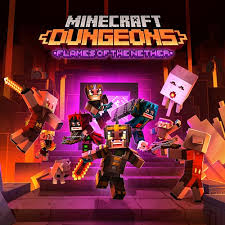
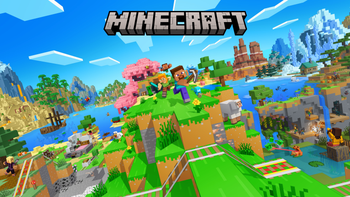

Minecraft (Base Game/Bedrock): Основна гращо охоплює ПКконсолі та мобільні пристрої. Minecraft Java Edition: Оригінальна версія для ПК. Minecraft Dungeons: Пригодницький екшн у стилі dungeon crawler. Minecraft Legends: Стратегічна гра. Minecraft: Story Mode: Сюжетна гра (від Telltale Games). Minecraft Earth: (Закрита) AR-гра для мобільних пристроїв. Minecraft Classic: Безкоштовна браузерна версія 2009 року

Що таке Minecraft Dungeons?Minecraft Dungeons — пригодницька екшн-гра у жанрі dungeon crawler, створена Mojang Studios разом із Double Eleven (випущена 26.05.2020). На відміну від класичного Minecraft, тут немає будівництва чи крафту: гравці проходять лінійні підземелля, б’ються з монстрами, збирають спорядження та зачарування, роблять лут-апгрейди; є кооператив до 4 гравців (локально та онлайн) і кілька доповнень/сезонного контенту.

Що таке Minecraft?Minecraft — це популярна відеогра в жанрі пісочниці, розроблена Mojang Studios. У грі гравці досліджують процедурно згенерований світ, збирають ресурси, крафтять предмети, будують споруди, борються з мобами й переживають пригоди. Доступні різні режими: виживання, творчість, хардкор та інші. Гра випущена вперше у 2011 році й має багатомільйонну спільноту, що створює моди, карти та контент.
.jpg)